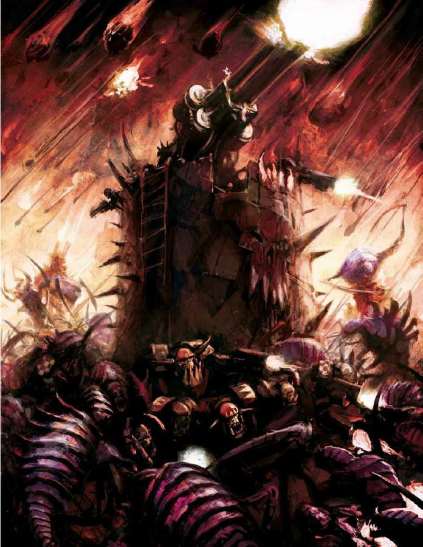

Octarius
| Octarius War | |
|---|---|
| Part of the Third and Fourth Tyrannic Wars | |
 Ork lines meeting the Tyranid swarm in the Octarius war Artwork © Games Workshop | |
| Date | c. 997.M41 – present[a] |
| Location | The Octarius Sector, Ultima Segmentum; chief world Octaria |
| Cause | The Kryptman Gambit |
| Status | Ongoing |
| Belligerents | |
| Commanders and leaders | |
| Strength | |
| Casualties and losses | |
| Orks: | Tyranids: |
| Worlds put to Exterminatus[o] | |
| Imperial involvement | |
| Inquisitor Lord Fidus Kryptman began the war by turning the fleet towards the Orks; the Deathwatch and Imperial containment forces in the Era Indomitus | |
Octarius is an Ork empire in the Ultima Segmentum, a dense cluster of Ork-held systems in the Octarius Sector that has existed for many thousands of years. It is known to the Imperium chiefly for the Octarius War, also called the War in Octarius, a war between the Orks and Hive Fleet Leviathan that the Inquisitor Lord Fidus Kryptman started deliberately in the last years of the 41st millennium to turn the hive fleet away from the Imperium. That war has continued into the Era Indomitus.[1][2]
The Kryptman Gambit is the most famous example of the Imperium setting its enemies on each other. It bought the Imperium time, but the Ordo Xenos warns that the war will produce either Tyranids strengthened by the Orks' hardy genetic stock or a Waaagh! larger than any the Imperium has faced. In 999.M41 the Ork warlord Ghazghkull Thraka came to Octarius, broke the Tyranid blockade of its main world and took the Orks of the empire into his Great Waaagh!.[1][3]
Background
[edit]The Ork empire of Octarius grew over many centuries from a few systems into a realm of crowded worlds, ruled at the end of the 41st millennium, according to earlier Imperial records, by the Grand Warlord Urlakk Urg. Its chief world, Octaria, held vast shanty cities, among them the capital Gargates. The Imperium regarded it as one of the largest greenskin realms on its borders, alongside Charadon.[4]
The Kryptman Gambit
[edit]In 997.M41 Kryptman detected the coming of a new hive fleet, Leviathan, which rose from below the galactic plane in two arms. After the victory at Tarsis Ultra, he ordered a cordon of Exterminatus across the fleet's path to deny it biomass. When migrating Orks occupied the emptied worlds, Kryptman was denounced as a radical and expelled from the Inquisition.[2]
Kryptman then turned to a new plan. With officers of the Deathwatch who remained loyal to him, he took a brood of genestealers in stasis from a drifting space hulk and released them among the Orks of Octarius, close to Leviathan's line of advance. The genestealers drew the hive fleet towards the crowded Ork worlds. Almost the whole of Leviathan turned into Octarius, and the Orks, delighted by an enemy that fought back without end, met it in battle.[1][2]
Course of the war
[edit]The war is the largest recorded struggle between the two species. The Orks fight it gladly; the Hive Mind is drawn by the endless biomass. Neither side has been able to win, since every Ork killed feeds the Tyranids, and every battle makes the Orks more numerous and warlike. Imperial observers report that Tyranid bioforms have begun to show Ork traits, and that Ork war machines have grown larger and more numerous.[1]
Ghazghkull at Octarius
[edit]In 999.M41, after the Third War for Armageddon, Ghazghkull Thraka led his fleet to Octarius. His ships broke the Tyranid blockade, dropped asteroid fortresses across the main continent of Octaria and teleported his mobs into battle. At Gargates Ghazghkull led the charge himself; a Mawloc of unusual size swallowed him whole, and moments later he cut his way out with his power klaw. The Tyranids were cleared from Octaria, and the Overfiend Zog Steeltoof swore allegiance to him. The flood of Orks that joined him released a psychic surge felt by psykers across the Imperium.[3]
Era Indomitus
[edit]When the Great Rift opened in 999.M41, Ghazghkull took it for the signal to begin his Great Waaagh! and left Octarius at the head of a fleet that the Imperium estimates at more than five million vessels. The war in Octarius did not end. Leviathan's tendrils remain locked in the sector, and Imperial forces sent in the Era Indomitus have tried to keep both sides contained and to stop either from breaking out. Some Ordo Xenos reports claim that Tyranid strains that fought in Octarius have since appeared in Imperial space.[3][5]
Assessment
[edit]Kryptman's methods have been condemned and praised in equal measure. He bought the Imperium years to prepare against Leviathan, at the price of feeding Orkoid genes to the Great Devourer and creating a war that may one day produce a greater threat than either species alone. The Inquisition has never formally restored him to the Ordo Xenos, though several of its members have since followed his example.[1]
Timeline
[edit]| Date | Event |
|---|---|
| Before M41 | The Ork empire of Octarius grows |
| 997.M41 | Hive Fleet Leviathan detected; Kryptman's cordon |
| c. 997–998.M41 (estimated) | The Kryptman Gambit; Leviathan turns into Octarius |
| 999.M41 | Ghazghkull breaks the blockade of Octaria; Zog Steeltoof submits |
| 999.M41 | The Great Rift opens; Ghazghkull leaves with his Great Waaagh! |
| Early M42 | The war continues; Imperial containment operations |
See also
[edit]
Notes
[edit]- ^ The year in which Kryptman's genestealers were released in Octarius is not recorded. Leviathan was first detected in 997.M41, and the diversion followed within a few years.
- ^ The Orks of the Octarius Empire.
- ^ Ghazghkull's WAAAGH! joined from 999.M41.
- ^ The Genestealer vanguards drew the fleet in.
- ^ Zog Steeltoof was an Overfiend.
- ^ a b c d Estimated; Imperial records give no figure.
- ^ The Orks held the whole Octarius Empire.
- ^ Ghazghkull's fleet was estimated at over 5,000,000 vessels when it left in 999.M41.
- ^ The organisms were in the blockade of Octaria and the swarms around it.
- ^ The fleet rose from below the galactic plane in two arms.
- ^ The dead were not counted.
- ^ Every Ork killed feeds the Tyranids, yet each battle leaves the Orks more numerous and warlike.
- ^ The dead were not counted.
- ^ The blockade was broken in 999.M41.
- ^ Kryptman's cordon put the worlds to Exterminatus to deny the fleet biomass.
References
[edit]- ^ a b c d e Thorpe, Gav. 13th Legion (novel). Black Library, Ch. 7. Codex Heretic Astartes - Death Guard (8th Edition), "The Doom of Hesp," pg. 23. Games Workshop.
- ^ a b c Codex: Tyranids (8th Edition), pp. 32, 37-38. Games Workshop. Abnett, Dan et al.. Lone Wolves (Graphic Novel). Black Library.
- ^ a b c McNeill, Graham. Priest of Mars (novel). Black Library. McNeill, Graham. Warriors of Ultramar (novel). Black Library.
- ^ Codex: Tau Empire (6th Edition), pg. 35. Games Workshop. Codex: Tyranids (6th Edition), pp. 8-12, 14-24, 26-29, 32-47, 49-56, 62, 64, 71-75, 77-80. Games Workshop.
- ^ Warhammer 40,000: Rulebook (6th Edition), pg. 175. Games Workshop. Codex: Blood Angels (5th Edition), pg. 17. Games Workshop.